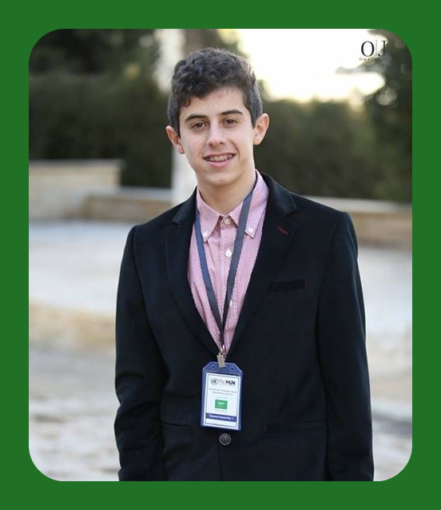

{% extends "index.html" %}
{% block body %}

For children born in a politically challenged country, it is extremely perplexing to keep an optimistic and hopeful view in life towards our goals and dreams after all the horrors Palestinian children and teenagers witness throughout their early lives. This makes it very difficult to have a promising environment to help children sustain their positive character and thought, as well as developing themselves into becoming the leaders of tomorrow for Palestine. Consequently, the spark of hope for younger Palestinians and early entrepreneurs, longing for a chance to prove themselves and make positive changes in their country and community, burns out. The cause for this potential burnout is mostly embedded in the lack of sufficient support from society and the unavailability of opportunities that would ease the development path for youth. With all these barriers blocking Palestinian youth's path for success, we still manage to rise and shine for the whole world to see and appreciate the Palestinian young entrepreneurs. Thus, imagine how an educated, supportive and open Palestinian society maintaining that spark inside young Palestinians and growing it into a light would become.
This is what the Paltel Group Foundation has realized and they have adopted the goals of ensuring a brighter future for Palestine and its upcoming generations, with new and enhanced opportunities to keep optimism in the hearts of youngsters. Therefore, WeCode for Palestine was developed and launched in 2015. This program aims to teach children of Palestine not only coding and programing, but also being leaders and entrepreneurs to be able to pursue their goals in life. Students from all around Palestine signed up for this program and after a robust selection process, a special few were picked. I was lucky to be one of those few. I joined this program because of my lifelong dream of going to college in the U.S.A and working for Google. Since I was 5 years old, I have been interested in coding and computer science, as I started my journey with the simple programming language Scratch.
I am even known in my family to be the “techy” person who knows all about computers and solves any computer-related problems. When I first heard about this program, I was incredibly intrigued by it as I felt that I had finally found my big break to join the world of computer science. From the moment I learned that I was accepted in the course, I knew and understood my goal in life; studying programming and working in the field of IT, computer science and software engineering.
Since the program is 3 years long, I expect to finish my last year with detailed knowledge of programming and its many languages. So far, I have attended the summer camp of 2016 and finished the 1st semester of year 1. During this period, I learned the basics of coding and suitable things for beginners in programming such as the turtle in python and creating a game using turtle and pygame. In addition, we made a calculator which I worked on personally as a project and developed it further than we did in class.
From this project, I was inspired to develop it further to become my personal project at the school It is basically a calculator that operates using voice commands. It is mostly meant for blind and handicapped individuals so it eases performing calculations for them. I hope to develop this project as far as possible and make an app of it someday and publish it.
Other than this project, WeCode has changed me and affected my personality and life in many ways. First of all, I have made new amazing and intelligent friends from all over Palestine and I was able to create special bonds with them. This is in addition to learning how to think better, strategically, creatively and in a more efficient way, as this has led me to have more enhanced ideas than I used to have. Finally, this remarkable program helped me identify my passion in life, the path I wish to take; programming, computer science and IT in general.
This is what the imminent generations in Palestine need to have. This is the kind of support that Palestinians need to give to each other in order for us to advance and become much better people and an even greater country.